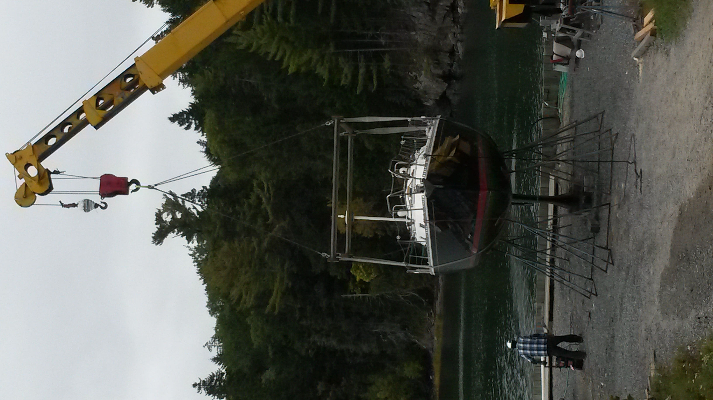
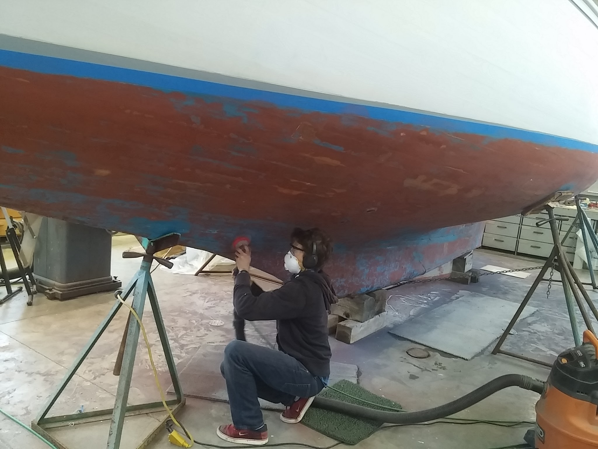

Working at the boat yard


After high school, I worked at my family's small business- a boat yard in Downeast Maine. We haul, launch, maintain, and store boats. We also set docks and moorings. Over the year, I learned and practiced a wide variety of skills.
Sanding, varnishing, painting, polishing, waxing. Operating the fork truck, tractor, and using the hydraulic trailer to pick up and move boats. Maneuvering boats in the water for delivery. Using a bosun's chair to make repairs to masts. Splicing rope Stepping masts and rigging sails Docking boats Communicating effectively with customers